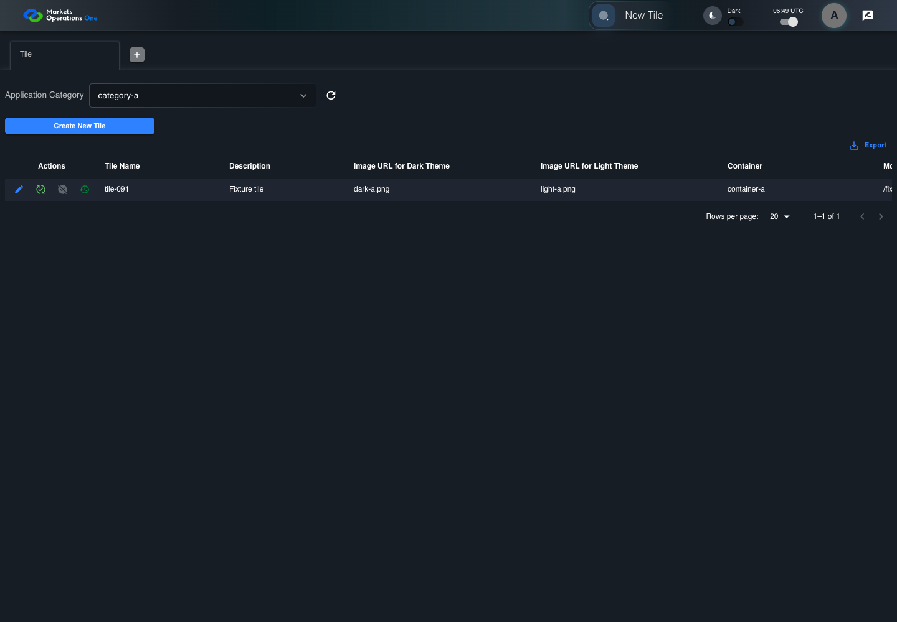

BFF-ADM-091 current BFF administration through actual UI
FAIL · application/run-072/bff-adm-091-current-bff-administration-through-actual-ui-df81b1b1ee7f-attempt-1 · ACTUAL_APPLICATION_LOCAL_SERVICES
Actual current React and exact-current BFF admin controllers/services/JPA with actual migration DDL in disposable PostgreSQL. Controlled OUD/EMS2 identities and local Spring bootstrap. Fixture SQL seeds/mutates isolated records; service errors are actual database errors. Undefined agreed messages remain unresolved acceptance.
2026-10-22T06:49:43.111Z to 2026-10-22T06:49:54.249Z
Assertions and result · Artifact manifest · Exact run inputs and source hashes
Result SHA-256:c0e7a0684fe5fd0c35a1947fd22c2d2388d9ddfccc525b2e736a0c0e7472af02Retained failure details
[
{
"message": "Error: \u001b[2mexpect(\u001b[22m\u001b[31mlocator\u001b[39m\u001b[2m).\u001b[22mtoBeVisible\u001b[2m(\u001b[22m\u001b[2m)\u001b[22m failed\n\nLocator: locator('.MuiAlert-root').filter({ has: locator('.MuiAlert-message') })\nExpected: visible\nTimeout: 5000ms\nError: element(s) not found\n\nCall log:\n\u001b[2m - Expect \"toBeVisible\" locator('.MuiAlert-root').filter({ has: locator('.MuiAlert-message') }) with timeout 5000ms\u001b[22m\n\u001b[2m - waiting for locator('.MuiAlert-root').filter({ has: locator('.MuiAlert-message') })\u001b[22m\n",
"stack": "Error: \u001b[2mexpect(\u001b[22m\u001b[31mlocator\u001b[39m\u001b[2m).\u001b[22mtoBeVisible\u001b[2m(\u001b[22m\u001b[2m)\u001b[22m failed\n\nLocator: locator('.MuiAlert-root').filter({ has: locator('.MuiAlert-message') })\nExpected: visible\nTimeout: 5000ms\nError: element(s) not found\n\nCall log:\n\u001b[2m - Expect \"toBeVisible\" locator('.MuiAlert-root').filter({ has: locator('.MuiAlert-message') }) with timeout 5000ms\u001b[22m\n\u001b[2m - waiting for locator('.MuiAlert-root').filter({ has: locator('.MuiAlert-message') })\u001b[22m\n\n at BffAdminApp.errorAlert (/Users/lushevol/code/github/ratan-release-impact/workbench/e2e/support/bff-admin-app.ts:166:169)\n at /Users/lushevol/code/github/ratan-release-impact/workbench/e2e/audit-specs/bff-admin.spec.ts:49:166\n at AuditCapture.step (/Users/lushevol/code/github/ratan-release-impact/workbench/e2e/support/audit-fixture.ts:94:21)\n at /Users/lushevol/code/github/ratan-release-impact/workbench/e2e/audit-specs/bff-admin.spec.ts:18:27",
"location": {
"file": "/Users/lushevol/code/github/ratan-release-impact/workbench/e2e/support/bff-admin-app.ts",
"column": 169,
"line": 166
},
"snippet": "\u001b[90m at \u001b[39m../support/bff-admin-app.ts:166\n\n 164 | }\n 165 | async assertUnchanged():Promise<void>{expect(await this.snapshot()).toEqual(this.expectedPersisted);expect(await this.gridSnapshot()).toEqual(this.initialGrid);}\n> 166 | async errorAlert(exact?:string):Promise<void>{const alert=this.page.locator('.MuiAlert-root').filter({has:this.page.locator('.MuiAlert-message')});await expect(alert).toBeVisible();await expect(alert).toHaveClass(/MuiAlert-standardError|MuiAlert-filledError|MuiAlert-outlinedError/);if(exact)await expect(alert.locator('.MuiAlert-message')).toHaveText(exact);else {const mutation=[...this.requests].reverse().find(request=>['create','update','audit'].includes(request.operation));expect(mutation?.status).toBeGreaterThanOrEqual(400);await expect(alert.locator('.MuiAlert-message')).not.toHaveText('');await this.audit.record('undefined-message-contract',{canonical:'Agreed message is unavailable. Only real error response and visible nonempty error are characterized.',actual:await alert.innerText()});}}\n | ^\n 167 | async cell(name:string,id:string){return this.ui.reveal(adminFields[name]??name,id);}\n 168 | }\n 169 |"
}
]Machine observations
- actual-identity-projection.json
a1342c94305307f741d777f2c0e4232d4fedea341a2780b9e35b6950f50aceba - baseline-inputs.json
22e10fa88c68105965df04df82b9f8914334fbdffaf9eeb06586a535292cfce4 - bff-boundary.json
93ed6caf7d229e58ed2d78095a7f87cb4e27a60ba34a4390d836ee1de5fad995 - committed-ui-submission-comparisons.json
a6e9fb807d9bec72eedbc36ef1292d4f4f4120371613a35c6a906bf504f43ba9 - concurrent-admin-b-checker.json
17a42c2a3384497fff5f084aee885d4c408661c28163bbe2da8878147e60b48b - fixture-step-10.json
947671f8bd30fef6bf80d0a0669fe4ccb58c12f7ab20b302b4e01f2cee133155 - fixture-step-11.json
0c6f4822cd69148b03372576de34c520237d0976840096d255ffd179dd0e6c9b - fixture-step-6.json
0584b4ed88b0b76f68a0707a5610225dfdab663c183eeaa6f798c7dc51c39672 - fixture-step-7.json
99f5574036abafbe16d6915ae312f79e17e33bd48250d1b0c9c9d46bdf1638df - fixture-step-8.json
40d64f11d616b902d469da22afd4a8386ec316eb6e40f6212322f34770edc4fa - fixture-step-9.json
eb61f57fcf23ea9426edeb5e42c1afa184b7b56de40f31854ab829b34fdb8759 - initial-persisted-records.json
d9e3b9cc01303b2805f9814c9d44b15cec24a1b2f0782bdbd99298a9cba14b2c - persisted-after-submit.json
42f0f4dc3f5b521aa41b05bace48aef101a1455f438c4543ad160ae04b7a0662 - reference-snapshot-3.json
b3d0f282b762ecbeeb74cf165e78cacf66555be48607866f681d6aac27519e4e - reference-snapshot-4.json
e5df638da49e8aaf81433eb36a14c70809b83c5acdd1c9b79f1513ed931c517b - rejection-or-policy-observation.json
ffc9ceef871fc47a94615161a284a172267ca3c0f83ef9aa16038f804c4495cf - ui-origin-bff-requests.json
a10bf811f8b13652a8816273a9b27327f9a19f3c629e5e586c5ecc07ee2b1a2b
Screenshot capture: CAPTURED. Named frames: 19.
Step screenshot evidence: INCOMPLETE. 18/19 canonical steps have execution screenshots.
Step 19 has no screenshot from an executed step.
Canonical step timeline
Given Admin C uses subject "admin-c" with role "FMO_ADMIN" in an isolated authenticated browser
Execution: PASSED.1. step-01 Visible state after step 1: Given Admin C uses subject "admin-c" with role "FMO_ADMIN" in an isolated authenticated browser
2026-10-22T06:49:47.312Z · 1440×1000
Step: /Users/lushevol/code/github/ratan-release-impact/workbench/tasks/ui-test-coverage-20261022/test-cases.md:18558
SHA-256:d4dfcfd066cb282b35fe27a5c2af894f9f029eabddc1ab4cd70ff64b83ffbe02And the controlled Tile fixture records the initial grid rows and persisted values
Execution: PASSED.2. step-02 Visible state after step 2: And the controlled Tile fixture records the initial grid rows and persisted values
2026-10-22T06:49:47.444Z · 1440×1000
Step: /Users/lushevol/code/github/ratan-release-impact/workbench/tasks/ui-test-coverage-20261022/test-cases.md:18559
SHA-256:be1b10f04a7a5fbea3e5b6b09c6ae4a843450dc0254c5a38f30819a4b2d760deAnd Category 101 has label "category-a" and Import Map 201 has Module Name "container-a"
Execution: PASSED.3. step-03 Visible state after step 3: And Category 101 has label "category-a" and Import Map 201 has Module Name "container-a"
2026-10-22T06:49:47.493Z · 1440×1000
Step: /Users/lushevol/code/github/ratan-release-impact/workbench/tasks/ui-test-coverage-20261022/test-cases.md:18560
SHA-256:fc2c937e503bdcced49b64e6b02f7ec616de96ee89daaab5ecbded9e336d500fAnd both references belong to "FMO_ADMIN" and the Tile page category filter value is Category 101
Execution: PASSED.4. step-04 Visible state after step 4: And both references belong to "FMO_ADMIN" and the Tile page category filter value is Category 101
2026-10-22T06:49:47.543Z · 1440×1000
Step: /Users/lushevol/code/github/ratan-release-impact/workbench/tasks/ui-test-coverage-20261022/test-cases.md:18561
SHA-256:3a315eaf69c98e45067f6ac7456ea6bc38f72785155b06c11d81cd202fbbdf26And the Tile grid has record "101" owned by "FMO_ADMIN"
Execution: PASSED.5. step-05 Visible state after step 5: And the Tile grid has record "101" owned by "FMO_ADMIN"
2026-10-22T06:49:47.594Z · 1440×1000
Step: /Users/lushevol/code/github/ratan-release-impact/workbench/tasks/ui-test-coverage-20261022/test-cases.md:18562
SHA-256:337233cda777fcb82f935751c94e4081ab2213819a21fc91c770fd1cbd37f5e1And the baseline fixture data defines "Tile Name" as "tile-091"
Execution: PASSED.6. step-06 Visible state after step 6: And the baseline fixture data defines "Tile Name" as "tile-091"
2026-10-22T06:49:47.644Z · 1440×1000
Step: /Users/lushevol/code/github/ratan-release-impact/workbench/tasks/ui-test-coverage-20261022/test-cases.md:18563
SHA-256:6f69377c335190d46fc599af48c2e47f4fde4078e4261b66d4edd22c1ea50d6eAnd the baseline fixture data defines "Module Path" as "/fixture"
Execution: PASSED.7. step-07 Visible state after step 7: And the baseline fixture data defines "Module Path" as "/fixture"
2026-10-22T06:49:47.695Z · 1440×1000
Step: /Users/lushevol/code/github/ratan-release-impact/workbench/tasks/ui-test-coverage-20261022/test-cases.md:18564
SHA-256:c78d022db6648e4417b189f8a785e788c9805611a3e57720ae68297664d8568aAnd the baseline fixture data defines "Tile Path" as "/case-091"
Execution: PASSED.8. step-08 Visible state after step 8: And the baseline fixture data defines "Tile Path" as "/case-091"
2026-10-22T06:49:47.745Z · 1440×1000
Step: /Users/lushevol/code/github/ratan-release-impact/workbench/tasks/ui-test-coverage-20261022/test-cases.md:18565
SHA-256:d5abd726a67a25b1f98fa014885187cbc15c86925048725ee3b1e8fd175edd79And the baseline fixture data defines "Role Entities" as "E-TRADE"
Execution: PASSED.9. step-09 Visible state after step 9: And the baseline fixture data defines "Role Entities" as "E-TRADE"
2026-10-22T06:49:47.794Z · 1440×1000
Step: /Users/lushevol/code/github/ratan-release-impact/workbench/tasks/ui-test-coverage-20261022/test-cases.md:18566
SHA-256:0bd01355610a5f49cd2287c613079204f7174fbcea2f0f161c3b8e797a0c3c43And the baseline fixture data defines "Filter Rule" as ""
Execution: PASSED.10. step-10 Visible state after step 10: And the baseline fixture data defines "Filter Rule" as ""
2026-10-22T06:49:47.845Z · 1440×1000
Step: /Users/lushevol/code/github/ratan-release-impact/workbench/tasks/ui-test-coverage-20261022/test-cases.md:18567
SHA-256:9a351297315f204d05e4340985a2918fb4a0590eedf21c28a9117a1bc997d7efAnd the baseline Tile references use "Aplication Category" "category-a" and "Container" "container-a"
Execution: PASSED.11. step-11 Visible state after step 11: And the baseline Tile references use "Aplication Category" "category-a" and "Container" "container-a"
2026-10-22T06:49:47.895Z · 1440×1000
Step: /Users/lushevol/code/github/ratan-release-impact/workbench/tasks/ui-test-coverage-20261022/test-cases.md:18568
SHA-256:7c981a5a8906ac9d733bf1ca5db90d20a7009e90032a21f582c6d03faad69348And Tile record "101" is inactive when this browser loads its grid
Execution: PASSED.12. step-12 Visible state after step 12: And Tile record "101" is inactive when this browser loads its grid
2026-10-22T06:49:47.944Z · 1440×1000
Step: /Users/lushevol/code/github/ratan-release-impact/workbench/tasks/ui-test-coverage-20261022/test-cases.md:18569
SHA-256:f8f0229d094ba789badd137475b9d4592dd21119fdd6836e0f7b0bdeb8d5ce26And its stored "updatedBy" value is "admin-a"
Execution: PASSED.
13. step-13 Visible state after step 13: And its stored "updatedBy" value is "admin-a"
2026-10-22T06:49:47.993Z · 1440×1000
Step: /Users/lushevol/code/github/ratan-release-impact/workbench/tasks/ui-test-coverage-20261022/test-cases.md:18570
SHA-256:f8f0229d094ba789badd137475b9d4592dd21119fdd6836e0f7b0bdeb8d5ce26When Admin C clicks the button labeled "Verify" in the Tile grid row with "Record Id" "101"
Execution: PASSED.14. step-14 Visible state after step 14: When Admin C clicks the button labeled "Verify" in the Tile grid row with "Record Id" "101"
2026-10-22T06:49:48.304Z · 1440×1000
Step: /Users/lushevol/code/github/ratan-release-impact/workbench/tasks/ui-test-coverage-20261022/test-cases.md:18571
SHA-256:d31bacde048a73d4ee5c2cc4b29d56e7cf02adeb7c0a37806b99299aae2c2194Then the dialog titled "verify ID: 101" is visible on the Tile administration page
Execution: PASSED.15. step-15 Visible state after step 15: Then the dialog titled "verify ID: 101" is visible on the Tile administration page
2026-10-22T06:49:48.373Z · 1440×1000
Step: /Users/lushevol/code/github/ratan-release-impact/workbench/tasks/ui-test-coverage-20261022/test-cases.md:18572
SHA-256:2f6d652751313e347345d54bacae8d2cd726a0d6eb1f03893d98899f339db9d5When Admin B completes a controlled verification after this verification dialog loads
Execution: PASSED.16. step-16 Visible state after step 16: When Admin B completes a controlled verification after this verification dialog loads
2026-10-22T06:49:48.516Z · 1440×1000
Step: /Users/lushevol/code/github/ratan-release-impact/workbench/tasks/ui-test-coverage-20261022/test-cases.md:18573
SHA-256:897015ea7df45c33ab8136e630b00beb9407ae47fb2be28a535b7c653b39a23eAnd Admin C clicks the button labeled "Verified" in dialog "verify ID: 101"
Execution: PASSED.17. step-17 Visible state after step 17: And Admin C clicks the button labeled "Verified" in dialog "verify ID: 101"
2026-10-22T06:49:48.818Z · 1440×1000
Step: /Users/lushevol/code/github/ratan-release-impact/workbench/tasks/ui-test-coverage-20261022/test-cases.md:18574
SHA-256:5aec9f39ba06ae7bbb40bc2162f336e309530f9b222ff563b5c61b98fcd4ac8cThen the alert with severity "error" in the portal snackbar displays the agreed message for that the record is already active
Execution: FAILED.
18. step-18-failure Visible state when step 18 failed. Later steps did not execute.
2026-10-22T06:49:53.863Z · 1440×1000
Step: /Users/lushevol/code/github/ratan-release-impact/workbench/tasks/ui-test-coverage-20261022/test-cases.md:18575
SHA-256:461d9a88fab4b5700ca17bd4623e20c0d40de81a14a3e7486b2c8dba53540440And the independent persisted-record readback retains the concurrent result "active"
Execution: NOT_EXECUTED.No screenshot is recorded for this step. No executed state is claimed.


Additional named frames

Screenshots establish visible state only. Assertions and traces support functional claims.